Using the Editor
General Information
Launching the Editor
List Boxes
Inline Help
Understanding the Editor Window
Collider Editor
Locator Editor
Material Set Editor
Import Window
Export Window
General Information
The editor window allows you to create, edit, and manage sprites, sprite groups, animations, frames, events, colliders, locators, material sets from one location.
- Real-time animation preview
- Align frames and animations directly in the frame editor. You can even animate offset to achieve a "shake" animation without drawing any extra frames!
- Lightbox mode shows a semi-transparent preview of any frame you choose to help with alignment.
- Size and animate colliders in the frame editor making it easy to match colliders to the sprite's animation.
- Position, rotate, and animate Locators in the frame editor.
Launching the Editor
To launch the editor, under the Window menu, click Sprite Factory.
List Boxes
A control you will see a lot in the editor is a list box with a row of buttons beneath as seen below.
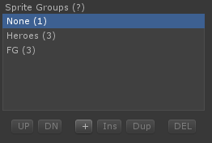
When there are more entries than vertical space allows, a scroll bar will appear.
The buttons on the bottom row are used to perform various functions to the selected object in the list box. The buttons in the example picture are as follows:
| UP | Move the selected entry 1 space up in the list. | |
| DN | Move the selected entry 1 space down in the list. | |
| + | Add a new entry at the end of the list. | |
| Ins | Insert a new entry at the selected position. | |
| Dup | Duplicate the selected entry. | |
| Del | Delete the selected entry. |
Some list boxes may use some or all of these buttons, or they may use different buttons than those shown above. Hover the mouse pointer over the button to see a description of what the button does.
Tips
- Press the Up Arrow or Down Arrow keys with the mouse hovering over a list box to step through the selections.
- Some list boxes have a (?) icon that you can hover the mouse over for an explanation.
Inline Help
Most items in the editor show inline help when you hover the mouse pointer over the field name. Also, some list boxes have a (?) icon that you can hover the mouse over for an explanation.
Understanding the Editor Window
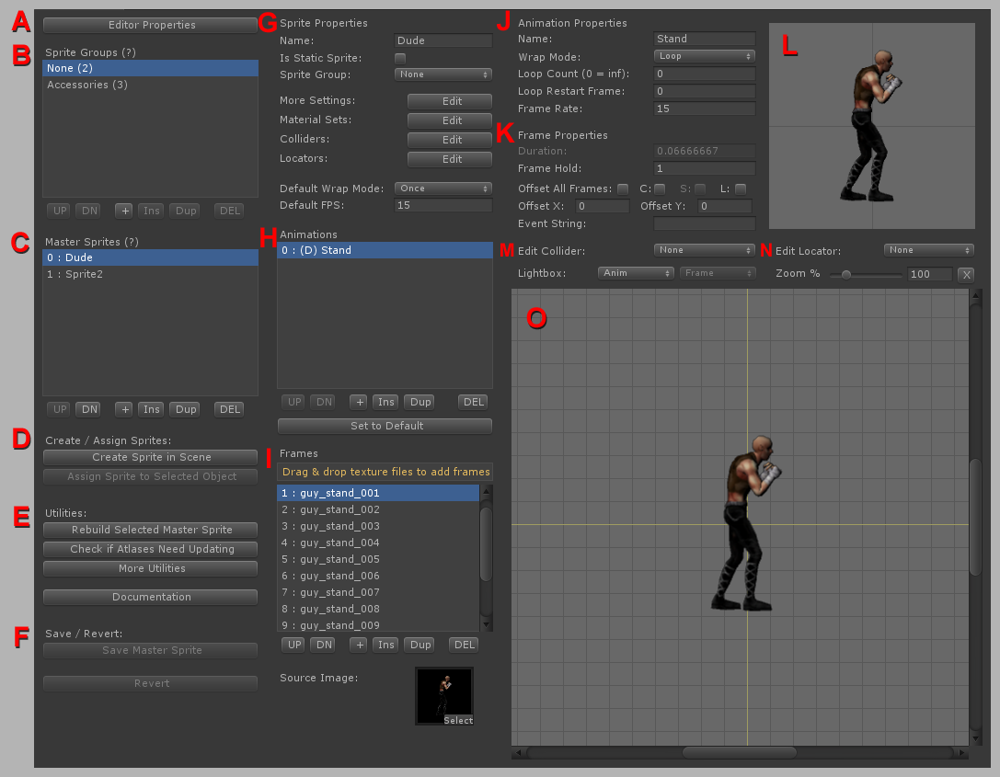
A. Editor Properties
B. Sprite Groups
C. Master Sprites
D. Create / Assign Sprites
E. Utilities
F. Save / Revert
G. Sprite Properties
H. Animations
I. Frames
J. Animation Properties
K. Frame Properties
L. Animation Preview
M. Collider Frame Properties
N. Locator Frame Properties
O. Frame Editor
Editor Properties
Opens the Editor Properties Window. These are global settings for the editor. Making changes to some of these settings requires that all Sprites and atlases be rebuilt.
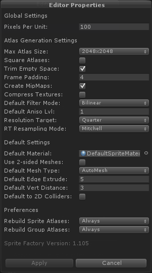
| Global Settings | ||
| Pixels Per Unit | The scale of the sprite. Higher numbers will result in a smaller sprite in world units. * CHANGE REQUIRES ALL ATLASES TO BE REBUILT * | |
| Atlas Generation Settings | ||
| Max Atlas Size | The maximum size allowed for atlases. This is useful if you need to limit the atlas size due to texture size limitations on some platforms. * CHANGE REQUIRES ALL ATLASES TO BE REBUILT * | |
| Square Atlases | Force atlases to always be square. Otherwise, they may be rectangular or square as needed. | |
| Trim Empty Space | Trims blank space around images to reduce wasted space in atlases. * CHANGE REQUIRES ALL ATLASES TO BE REBUILT * | |
| Frame Padding | Padding around each image in an atlas in pixels. Too small a padding may lead to edge bleeding problems with mip-mapping and filtered textures. * CHANGE REQUIRES ALL ATLASES TO BE REBUILT * | |
| Create MipMaps | Enable or disable creation of mip maps for atlas textures. * CHANGE REQUIRES ALL ATLASES TO BE REBUILT * | |
| Compress Textures | Enable or disable texture compression for atlases. Compressed textures may result in reduced image quality. Uncompressed textures require more space. * CHANGE REQUIRES ALL ATLASES TO BE REBUILT * | |
| Default Filter Mode | Sets the default texture filter mode for sprite and group atlas textures. An individual sprite's or groups's texture filter mode can be changed at any time under Sprite Properties -> More Settings -> Texture Filter Mode for a sprite or Sprite Group Properties -> Texture Filter Mode for a sprite group. * CHANGE REQUIRES ALL ATLASES TO BE REBUILT * |
|
| Default Aniso Lvl | Sets the default anisotropic level for sprite and group atlas textures. An individual sprite's or groups's anisotropic level can be changed at any time under Sprite Properties -> More Settings -> Aniso Level for a sprite or Sprite Group Properties -> Aniso Level for a sprite group. * CHANGE REQUIRES ALL ATLASES TO BE REBUILT * |
|
| Resolution Target | Scales the sprite textures to the specified size during atlas building. This is useful if you are targeting a specific platform that has a lower resolution screen. IMPORTANT NOTE: This setting does not affect the size of sprites in the world. This setting is only for reducing the final texture resolution for while leaving the world-space size the same. *CHANGE REQUIRES ALL ATLASES TO BE REBUILT * | |
| RT Resampling Mode | The resampling mode to use when scaling textures for resolution targets.\n* CHANGE REQUIRES ALL ATLASES TO BE REBUILT * | |
| Default Settings | ||
Default Material |
Sets the default material to use for all Sprites. This material can be overridden on individual Sprites and Sprite Groups in the Material Set editor. * CHANGE REQUIRES ALL MATERIALS TO BE REBUILT * | |
| Default Mesh Type | Sets the default mesh generation type for sprites. An individual sprites's mesh type setting can be changed at any time under Sprite Properties -> More Settings -> Mesh Type. * CHANGE REQUIRES ALL ATLASES TO BE REBUILT * | |
Default Edge Extrude |
Sets the default edge extrusion distance for sprite meshes. An individual sprite's setting can be changed at any time under Sprite Properties -> More Settings. NOTE: This only has an affect if Mesh Type is set to AutoMesh. * CHANGE REQUIRES ALL ATLASES TO BE REBUILT * | |
| Default Vert Distance | Sets the default vertex reduction distance for sprite meshes. A higher number will result in a mesh with fewer vertices, but too a high a number could cause areas of the sprite to be cut off. An individual sprite's setting can be changed at any time under Sprite Properties -> More Settings. NOTE: This only has an affect if Mesh Type is set to AutoMesh. * CHANGE REQUIRES ALL ATLASES TO BE REBUILT * | |
| Use 2-sided Meshes | Sets the default 2-sided mesh setting for sprites. An individual sprites's 2-sided mesh setting can be changed at any time under Sprite Properties -> More Settings -> Two-Sided Mesh. * CHANGE REQUIRES ALL ATLASES TO BE REBUILT * | |
| Default to 2D Colliders | Sets the default collider type to 2D for new colliders. When you create a collider set, this setting will determine what the initial collider type. Only available in Unity 4.3+. Note: Changing this default setting will not change any of your existing colliders, it will only affect new colliders added later. | |
| Preferences | ||
| Rebuild Sprite Atlases | Automatically rebuild Sprite atlases every time you save a Master Sprite? Sometimes you may want to turn this off because it takes a very long time to build the atlases and you need to make many changes to a Sprite. You will have to manually rebuild the Sprite when you are finished before your Sprites will function correctly. | |
| Rebuild Group Atlases | Automatically rebuild Sprite Group atlases every time you save a Master Sprite in the group? Sometimes you may want to turn this off because it takes a very long time to build the atlases and you need to make many changes to a Sprite Group. You will have to manually rebuild the Sprite when you are finished before your Sprites will function correctly. |
Sprite Groups
A Sprite Group is a group of Master Sprites that share atlases thereby saving memory and draw calls. Sprite groups are particularly useful for grouping static sprites. See Sprite Groups for more information.
Sprite Groups are displayed in a list box as seen above. The number in parenthesis (1) seen next to the group name shows how many Master Sprites are assigned to that group. Sprite Groups can be reordered, created, inserted, duplicated, and deleted by using the buttons below the list box.
Creating Sprite Groups
To create a new Sprite Group, click the + button below the list box. The Sprite Group Properties for the newly created group will be displayed. Give the group a name and click Save Sprite Group.
Creating a new Sprite in a Group
Select the Sprite Group you wish to create the new Master Sprite in and click the + icon below the Master Sprite listbox. See Master Sprites for more information.
Moving Sprites In and Out of Sprite Groups
Master Sprites can be moved in and out of groups at will from Sprite Properties -> Sprite Group. (Select the Master Sprite first to make Sprite Properties appear.) Note that when moving a sprite to or from a group, atlases and materials will be rebuilt for both groups which can take some time depending on the number of sprites in each group.
Shared Group Properties
Sprite Groups have certain properties which are shared by all sprites within the group: Atlas Properties and Material Sets. When a sprite is in a group, these properties can no longer be set in the sprite, but must be set in the group instead.
Sprite Group Properties
The properties of the currently selected Sprite Group. When a Sprite Group is first selected in the editor, the Sprite Group properties will be displayed. If you have a Master Sprite selected, Sprite Group Properties will not be displayed and you must click on another group and then back onto the current group in order to display the Sprite Group Properties.
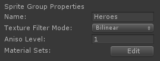
| Name | The name of this sprite group. | |
| Texture Filter Mode | Sets the texture filter mode for atlas textures in this group. | |
| Aniso Level | Sets the anisotropic level for atlas textures in this group. | |
| Material Sets | Edit materials sets for this sprite group. See Material Set Editor for more information. |
Master Sprites
A Master Sprite is a template for a sprite. All sprites, whether scene objects or prefabs, must reference a Master Sprite from which they will load their data on Awake(). See MasterSprites for more information.
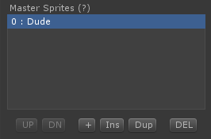
Master Sprites are displayed in a list box as seen above. Master Sprites can be reordered, created, inserted, duplicated, and deleted by using the buttons below the list box. When a Master Sprite is selected, the Sprite Properties will be displayed allowing you to edit animations, colliders, locators, and material sets.
Creating a New Master Sprite
Make sure you have the desired Sprite Group selected first (or the group "None" for no group), then click the + button below the list box. A new Master Sprite will be created and the properties for this sprite will be displayed.
Note: Deleting a Master Sprite will cause all sprites in scene or in prefabs based on that Master Sprite to break because they cannot refer back to their template. These sprites can be assigned a different Master Sprite with the "Assign Master Sprite to Selected Object" command.
Create / Assign Sprites
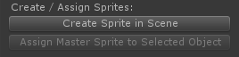
Create Sprite in Scene
To create a new sprite in the scene from a Master Sprite, first select a Master Sprite from the Master Sprites list box, then click "Create Sprite in Scene".
Assign Master Sprite to Selected Object
To assign a sprite to an existing GameObject, first select a Master Sprite from the Master Sprites list box, then select a GameObject from the Hierarchy or a prefab from the Project window, then click "Assign Master Sprite to Selected Object". This will replace any Sprite components and other required components (MeshRenderer, MeshFilter) on the GameObject.
Utilities
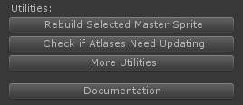
Rebuild Selected ____________
This button changes depending on whether you have a Master Sprite or a Sprite Group selected. (To apply to a Sprite Group, a Master Sprite must not be selected.)
Rebuild Selected Master Sprite
Forces a re-save on the selected Master Sprite rebuilding all assets (atlases, materials, meshes, etc.). If the Master Sprite is in a Sprite Group, all Master Sprites in the group will be rebuilt as well.
Rebuild Selected Sprite Group
Forces a re-save on the selected Sprite Group rebuilding all assets (atlases, materials, meshes, etc.).
Check if Atlases Need Updating
Checks for changes to source image files in all Master Sprites. If any changes are found, you will be given the option to rebuild those Master Sprites.
More Utilities
Opens the More Utilities window.
Documentation
Opens the Sprite Factory documentation website.

Rebuild All Atlases
Rebuilds all atlases in all Master Sprites and Sprite Groups. This operation can take a very long time depending on how many Master Sprites are in the system. You should NEVER interrupt this operation once it has started or you risk corrupting the save data.
Rebuild All Materials
Rebuilds all materials in all Master Sprites and Sprite Groups. This can be useful if you make changes to Material Set source files shared by many Master Sprites.
Rebuild Data File
Rebuild the main data file by scanning the save folder for existing assets. You should only need to do this if your data file becomes corrupt.
Import
Import Master Sprites, Sprite Groups, prefabs, and dependencies from a Sprite Factory export set. See Import Window for more information.
Export
Export Master Sprites, Sprite Groups, prefabs, and dependencies to a Sprite Factory export set. See Export Window for more information.
Save / Revert
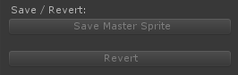
Save
This button changes depending on whether you are editing a Master Sprite or a Sprite Group. Saves changes to disk.
Revert
This button changes depending on whether you are editing a Master Sprite or a Sprite Group. Reverts to the saved version on disk.
Sprite Properties
Properties for the currently selected Master Sprite.
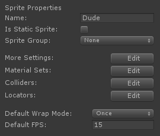
| Name | The name of this sprite. | |
| Is Static Sprite | Set whether this sprite is static or animated. Static sprites have no animation and consist of a single frame. You can use static sprites for non-animated background elements, for example. Static sprites are faster than animated sprites, so if you have a sprite with only one frame, make it a static sprite. Note that you will almost always want to assign static sprites to groups as a static sprite outside a group would generate an atlas with only one frame wasting memory. | |
| Sprite Group | The group this sprite is assigned to. Sprites in Sprite Groups share atlases and materials to reduce draw calls. Changing the assigned sprite group will require atlases and materials to be rebuilt for the group(s) and sprites affected. | |
| More Settings | More settings for this sprite. See More Sprite Settings for more information. | |
| Material Sets | Edit materials sets for this sprite. See Material Set Editor for more information. | |
| Colliders | Edit colliders for this sprite. See Collider Editor for more information. | |
| Locators | Edit locators for this sprite. See Locator Editor for more information. | |
| Default Wrap Mode | The default wrap mode for new animations. When you create a new animation, this setting determines the initial wrap mode of the animation. An individual animation's wrap mode can be changed at any time under Animation Properties -> Wrap Mode. | |
| Default FPS | The default playback speed in frames per second for new animations. When you create a new animation, this setting determines the initial frame rate of the animation. An individual animation's frame rate can be changed at any time under Animation Properties -> Frame Rate. |
The "More Settings" button under Sprite Properties opens a window containing some settings for this Master Sprite.
| Misc Settings | ||
| Edge Tiling | Sets the edge tiling mode for the sprite. This affects how the edges of the sprite are blended. In general, background tiles should be tilable, characters and objects should not. Auto will try to determine which edges should be tilable. If you are seeing artifacts at the edges of a tilable sprite, set it to Manual and select which edges should be tilable. When an edge is not tilable, extra padding will be added to eliminate bilinear/trilinear filtering cutoff at the edge of the mesh plane. This setting depends on the global frame padding setting in Editor Properties. If you have no padding, this setting will have no effect. | |
| Top | Makes the top edge tilable. | |
| Bottom | Makes the bottom edge tilable. | |
| Left | Makes the left edge tilable. | |
| Right | Makes the right edge tilable. | |
| Two-Sided Mesh | Set whether this sprite uses a single or double-sided mesh plane. Two-sided meshes can be useful if you are using a shader that culls backfaces yet you want the sprite to be double-sided. | |
| Atlas Settings | (These settings will not be displayed for Master Sprites in a Sprite Group. Instead, they are controlled by the Sprite Group and can be found in Sprite Group Properties.) | |
| Texture Filter Mode | Sets the texture filter mode for atlas textures in this sprite. | |
| Aniso Level | Sets the anisotropic level for atlas textures in this sprite. | |
Mesh Settings |
||
| Mesh Type | Sets the mesh generation type for this sprite. | |
| Default Edge Extrude | Uncheck this to override the default mesh edge extrusion setting. NOTE: This only has an affect if Mesh Type is set to AutoMesh. | |
| Edge Extrude | Sets the edge extrusion distance for sprite meshes. NOTE: This only has an affect if Mesh Type is set to AutoMesh. | |
| Default Vert Distance | Uncheck this to override the default vertex reduction distance setting. NOTE: This only has an affect if Mesh Type is set to AutoMesh. | |
| Vertex Distance | Sets the vertex reduction distance for sprite meshes. A higher number will result in a mesh with fewer vertices, but too a high a number could cause areas of the sprite to be cut off. NOTE: This only has an affect if Mesh Type is set to AutoMesh. |
Animations
Animations in the currently selected Master Sprite.
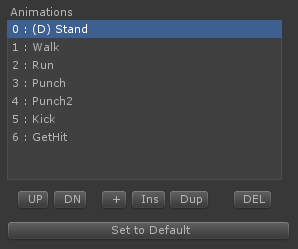
Animations are displayed in a list box as seen above. Animations can be reordered, created, inserted, duplicated, deleted, and set to default by using the buttons below the list box. The animation with the (D) symbol in front of the name is the default animation.
Creating a New Animation
Click the + button to create a new animation. The Animation Properties will be displayed for the new animation where you can set the name and other properties.
Set to Default
Every sprite must have a default animation. The default animation is usually the animation that plays when no other animation is playing. To set a default animation, select an animation from the list box and click "Set to Default".
Frames
Frames in the currently selected animation.
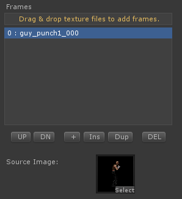
Frames for the currently selected animation are displayed in a list box as seen above. Frames can be reordered, created, inserted, duplicated, and deleted by using the buttons below the list box.
Creating a New Frame
The fastest way to create new frames is to drag and drop Textures from the Project window into the drop zone above the list box. New frames will be created for each Texture, ordered alpha-numerically, one for each Texture. You can also create a new frame by clicking the + button below the list box, but you will then have to manually supply a Source Image for the frame.
Source Image
The source Texture used for the currently selected frame. You can drag and drop a Texture from the Project window into the thumbnail or click the "select" label on the thumbnail to bring up a picker window.
Animation Properties
Properties for the currently selected animation.
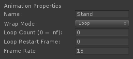
| Name | The name of this animation. This name must be unique as it is used to play the animation via scripting. | |
| Wrap Mode | Wrap mode determines what happens after the last frame of an animation is played. For example, Loop causes the animation to immediately restart at the beginning. | |
| Loop Restart Frame | Restart at this frame when loop cycles. | |
| Loop Count | Determines how many loops are played before playback ends. 0 = Loop Continuously. | |
| Frame Rate | Playback speed in frames per second. |
Frame Properties
Properties for the currently selected frame.
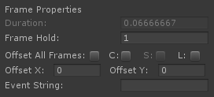
| Duration | The length of time in seconds that the current frame will be displayed. This is automatically calculated based on frame rate and frame hold and is displayed for reference. | |
| Frame Hold | The number of frames over which to display this frame during playback. You can use this to make a frame play longer to adjust animation timing. For example, if frame rate is 30 fps, a frame hold of 3 will display this frame over 3 frames for a total hold time of 1/10th of a second. (1 - 1000) | |
| Offset All Frames | Offset the position of all frames in this animation simultaneously. This is useful if you need to reposition the whole animation at once. To offset colliders on all frames as well, enable the Colliders checkbox also. Note that this setting affects changes to the OffsetX and OffsetY fields as well as repositioning of the sprite directly in the frame editor. | |
| C (Colliders) | Offset the position of collider frames as well when repositioning the sprite in the frame editor. This will not reposition static colliders unless you enable the Static checkbox as well. Note that this setting affects changes to the OffsetX and OffsetY fields as well as repositioning of the sprite directly in the frame editor. | |
| S (Static) | Offset the position of static colliders along with animated collider frames. | |
| L (Locators) | Offset the position of Locators. Note that this setting affects changes to the OffsetX and OffsetY fields as well as repositioning of the sprite directly in the frame editor. | |
| Offset X | The X position of the sprite in the frame editor. (-1024 - 1024) | |
| Offset Y | The Y position of the sprite in the frame editor. (-1024 - 1024) | |
| Event String | If not left blank, when this frame plays, a SendMessage will be sent by Sprite which will pass the string you set here. This can be used to trigger an action each time a frame plays, for example, playing a sound effect during certain frames of a walk cycle or attack animation. Your string should be something that describes the event such as sword_attack_swing_finish. See Sprite.OnSpriteFrameStart and Sprite.OnSpriteFrameEnd for information on usage. |
Animation Preview
Displays a real-time preview of the currently selected animation.
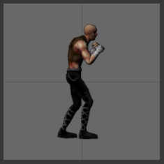
Tips
- Left-click on the animation preview to restart animation playback.
Collider Frame Properties
Properties for the current collider frame. See Colliders for more information.
Animated colliders can be animated frame-by-frame. Animatable channels are enabled, width, height, x-center, y-center, and rotation.
For Static colliders, the settings remain the same across all frames.
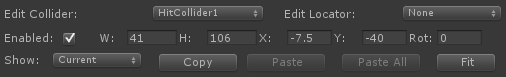
| Edit Collider | Select a collider to begin editing collider frames. If the sprite has no colliders yet, you can add some under Sprite Properties -> Colliders -> Edit. | |
| Enabled | Enable or disable this collider during this frame of animation. | |
| W | The width of the collider. | |
| H | The height of the collider. | |
| X | The X position of the collider's center. | |
| Y | The Y position of the collider's center. | |
| Rot | The rotation of the collider. | |
| Show | Filter which collider groups to show in the frame editor. | |
| Paste | Paste collider frame properties to current frame for the currently selected collider. | |
| Paste All | Paste collider frame properties to all frames in this animation for the currently selected collider. NOTE: Does not affect static colliders. | |
| Fit | Fit collider to sprite. |
Locator Frame Properties
Properties for the current locator frame.
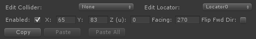
| Edit Locator | Select a locator to begin editing locator frames. If the sprite has no locators yet, you can add some under Sprite Properties -> Locators -> Edit. | |
| Enabled | Enable or disable this locator during this frame of animation. | |
| X | The X position of the locator in pixels. | |
| Y | The Y position of the locator in pixels. | |
| Z (u) | The Z offset of the locator in world units (not pixels). -Z is forward toward the screen, +Z is back into the screen. This is useful if you are attaching another sprite to the lLocator and want the child sprite to display in front or behind the parent sprite. To display in front, use a negative value.\n\nNote: The \"Flip Fwd Dir\" setting does not change the direction of Z. -Z is ALWAYS toward the screen. | |
| Facing | The Z-axis rotation of the locator. | |
| Flip Fwd Dir | Flip the X direction of the locator. By default, a locator facing right (+X) in the frame editor has its Y vector facing up. Check this if you need the locator to face left (-X) in the frame editor with the Y vector facing up. In most cases, if your sprite is drawn facing right, check this. If it is drawn facing left, uncheck this. Note: This setting does not change the direction of Z. -Z is ALWAYS toward the screen. | |
| Copy | Copy locator frame properties. | |
| Paste | Paste locator frame properties to current frame for the currently selected locator. | |
| Paste All | Paste locator frame properties to all frames in this animation for the currently selected locator. |
Frame Editor
Displays the currently selected frame. The Frame Editor allows you to:
- Position and align frames and animations.
- Position, size, rotate, and animate collider frames.
- Position, rotate, and animate locator frames.
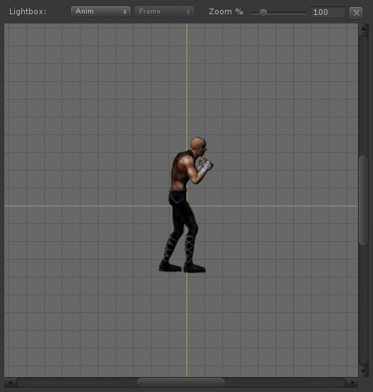
Lightbox Controls:
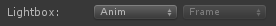
| Anim | Select an animation from which to display a semi-transparent frame in the background of the frame editor to help with frame alignment | |
| Frame | Select a frame to display a semi-transparent image in the background of the frame editor to help with frame alignment. |

An example of lightbox mode.
Zoom Controls:
| Zoom % | Zooms the Frame Editor display. | |
| X | Resets zoom to 100% and centers the Frame Editor display. |
Tips
- Position sprites, locators, and colliders with a left-click and drag.
- Pan the display area with a right-click and drag.
- Zoom the display area with the mouse wheel.
- The keyboard arrow keys move the current offset by 1 pixel. Hold Shift while using the arrow keys to offset by 10 pixels. (Mouse pointer must be hovering over the Frame Editor box during keyboard input.)
- Rotate Locators by clicking and dragging on the arrowhead. Hold Shift while you drag to snap to 45 degree angles.
- Size colliders by left-clicking and dragging box corner points.
- Rotate colliders by left-clicking and horizontally dragging the rotation handle at the center of the collider.
- Copy, Paste, and Paste All can be very useful when working with Locator and collider frames. (Standard keyboard copy/paste shortcuts work too!)
- Keyboard shortcuts for stepping through animation: Previous = Q or Comma, Next = W or Period.
- Offset options in Frame Properties can help you realign whole animations along with colliders and locators easily.
- Lightbox mode shows a semi-transparent preview of any frame you choose to help with alignment.
- The center crosshair corresponds to the center pivot of the Sprite GameObject. For characters, you may want to align the feet on the center line so that the Sprite's pivot is at the base of the character..
Collider Editor
Allows you to edit colliders and collider groups for the selected Master Sprite. See Colliders for more information.
Colliders
The sprite collider system allows you to define any number of colliders for your sprite and optionally animate the colliders to match the animation of your sprite. You can set every property in the colliders just as you would with a normal collider component. You can choose to add a rigidbody to each collider, or designate one collider + rigidbody as Parent so all the other colliders will share its rigidbody.
Animated colliders can have their shape, relative position, rotation, and enabled state animated frame-by-frame. One example use case would be a damage trigger in an animated character. For example, a fighting game character could have a trigger collider that stays disabled in most animations but enables during an attack animation and animates size and relative position to match the sprite's attack animation.
Note: The sprite collider system may not fit everyone's needs since at present only BoxColliders are supported. If this is the case, you can always add colliders and rigidbodies manually on the sprite's game object.
Collider Groups
You can create named groups and assign colliders to them. Collider can groups help you more easily determine what to do when a collision event occurs. You can test for a group name in a collision event instead of having to test for individual collider names. For example, create a group called HitDetectors and assign all your hit detection colliders to this group. When a collision event occurs, just test for the group name and take action. Collider groups also allow you to filter the visible colliders in the frame editor by group so you can work on a particular set of colliders without other unrelated colliders getting in your way while you work.
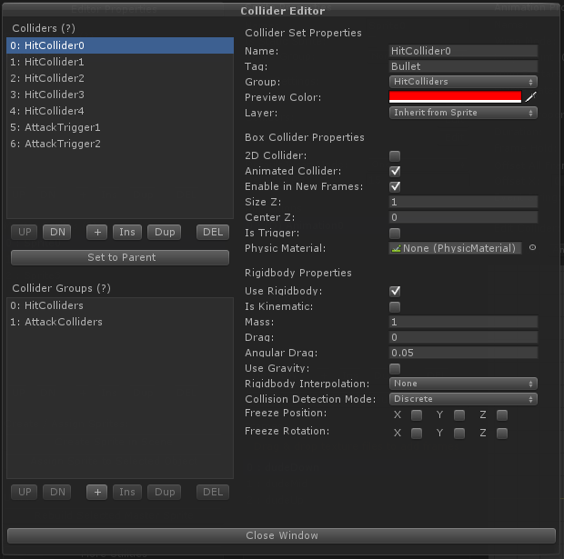
Colliders List Box
Displays the colliders in this Master Sprite. The collider displayed with (P) before its name is the parent collider (if any). Colliders can be reordered, created, inserted, duplicated, deleted, and set to parent.
Set to Parent (only displayed if the selected collider is not the parent)
Make selected collider the parent of all other colliders. The parent collider will be added to the main Sprite game object. All others will be children of the parent in the hierarchy. Normally, the parent collider would be the main movement collider for your sprite. It is also useful if you want all child colliders to share a rigidbody.
Unparent (only displayed if the selected collider is the parent)
Make selected collider no longer be the parent of all other colliders.
| Properties | ||
| Name | The name of this collider. This name can be used to access the collider through scripting and must be unique in this sprite. | |
| Tag | The tag which will be assigned to this collider's GameObject. You must create tags in the Unity tag inspector. The string you enter here must match a Unity tag name exactly. NOTE: If the collider is set to Parent, the tag will be set on the main Sprite GameObject. | |
| Group | The collider group this collider is in. The group can be used to filter collisions to a specific group of colliders through scripting. | |
| Preview Color | The color the of the collider in the frame editor. | |
| Layer | The layer the collider will be created on. | |
| Box Collider Properties | ||
| 2D Collider | Is this collider 2D or 3D? Only available in Unity 4.3+ | |
| Animated Collider | Is this collider animated or static? An animated collider can have its shape, relative position, and enabled state animated frame-by-frame during sprite animation. A static collider always exists in the same shape and relative position throughout every frame of the sprite animation. | |
| Enable in New Frames | Enable this if you want this collider to be enabled by default in every new animation frame you add to the sprite. | |
| Size Z | The depth of the collider in units. | |
| Center Z | The center position of the collider in the Z axis. 0 represents a centered collider. -Z is toward you the viewer, +Z is deeper into the screen. | |
| Is Trigger | Is this collider a trigger type collider? | |
| Physic Materal | You can assign a physic material if this collider will be controlled by a rigidbody. | |
| Rigidbody Properties | (See Rigidbody for more information.) | |
| Use Rigidbody | Create a rigidbody for this collider? | |
| Is Kinematic | Is the rigidbody kinematic? | |
| Mass | The mass of the body. [0.0000001, 1000000000] | |
| Drag | The linear drag coefficient. 0 means no damping. [0, infinity] | |
| Angluar Drag | The angular drag coefficient. 0 means no damping. [0, infinity] | |
| Use Gravity | Does the rigidbody use gravity? | |
| Rigidbody Interpolation | This is used to prevent read back from kinematic rigidbodies. | |
| Collision Detection Mode | The collision detection mode of the rigidbody. | |
| Freeze Position | Freeze position on x, y, and/or z. | |
| Freeze Rotation | Freeze rotation on x, y, and/or z. | |
| Rigidbody2D Properties | (See Rigidbody2D for more information. Only available in Unity 4.3+) | |
| Mass | The mass of the body. [0.0001, 1000000] | |
| Linear Drag | The linear drag coefficient. 0 means no damping. [0, 1000000] | |
| Angular Drag | The angular drag coefficient. 0 means no damping. [0, 1000000] | |
| Gravity Scale | How much gravity affects this body. [-1000000, 1000000] | |
| Fixed Angle | Whether the body's angle is fixed or not. | |
| Interpolate | The per-frame update mode for the body. | |
| Sleeping Mode | The sleeping mode for the body. | |
| Collision Detection Mode | The collision detection mode for the body. |
Collider Groups List Box
Displays the collider groups in this Master Sprite. Collider groups can be reordered, created, inserted, duplicated, and deleted.
| Properties | ||
| Name | The name of this collider group. This name can be used to access the collider group through scripting and must be unique in this collider set. |
Locator Editor
Allows you to edit Locators for the selected Master Sprite. See Locators for more information.
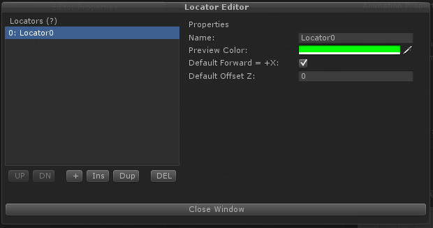
Locators List Box
Displays the Locators in this Master Sprite. Locators can be reordered, created, inserted, duplicated and deleted.
| Locator Properties | ||
| Name | The name of this locator. This name can be used to access the locator through scripting and must be unique in this sprite. | |
| Preview Color | The color the of the locator in the frame editor. | |
| Default Forward = +X | Start new frames with the forward direction of the locator set to +/- X. This affects the direction of the up vector. In essence, unchecking this rotates the locator 180 degrees on the Y axis so the +X vector faces left. Generally, if your sprites are drawn facing right, you should keep this checked. | |
| Default Offset Z | The starting Z offset of the locator in new frames in world units (not pixels). -Z is forward toward the screen, +Z is back into the screen. This is useful if you are attaching another sprite to the Locator and want the child sprite to display in front or behind the parent sprite. To display in front, use a negative value. |
Material Set Editor
Allows you to edit material sets for the selected Master Sprite. See Material Sets for more information.
Material Sets allow you to define multiple materials for a sprite. You can switch a sprite's material at any time by changing the currently used material set via scripting. This can be useful for effects that require a different shader.
A material set requires a source material to be defined from which it will create materials for the sprite inheriting the source material's shader and settings. Create a material in your project, set the shader (must have a _MainTex property to work correctly), and drag and drop the material onto the Source Material field of your material set. You may use this source material on as many material sets across as many sprites/groups as you like.
Note: It's important that the source material is never deleted from your project because it is used every time you make changes to the sprite/group. If you make changes to the source material later, in order for sprite materials to inherit the new material settings, you must update sprite materials by rebuilding the materials by either rebuilding the Master Sprite or Group using the Rebuild Sprite/Group command from the editor or rebuilding all materials at once using the Rebuild All Materials command from the editor.
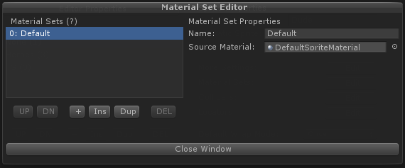
Material Sets List Box
Displays the material sets in this Master Sprite. Material sets can be reordered, created, inserted, duplicated and deleted.
| Material Set Properties | ||
| Name | The name of this material set. This name must be unique as it is used to change the currently displayed material on the sprite via scripting. | |
| Source Material | The source material from which materials for this sprite will be generated in this material set. Note: The source material's shader must have a _MainTex property. |
Import Window
After selecting an .sfex file to import, the import window will be displayed showing you information about the package. If there are conflicts, warnings and errors will be displayed explaning in detail the issues. Please see Working in Multiple Projects for more information about how to properly set your projects to avoid import/export problems.

Export Window
Master Sprites, Sprite Groups, and prefabs based on those sprites can be exported to a .sfex + .unitypackage file set for import into another project. The export window allows you to choose which Sprite Groups and Master Sprites are to be exported. Please see Working in Multiple Projects for more information about how to properly set your projects to avoid import/export problems.
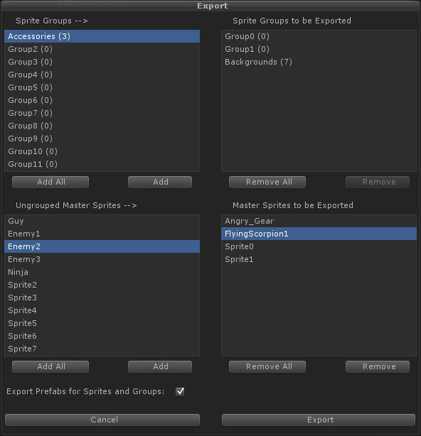
Sprite Groups box (top-left)
Shows a list of all the Sprite Groups in your project. Click a group name and then click the "Add" button to add that Sprite Group to the export list. Click "Add All" to add all Sprite Groups to the export list. When a Sprite Group is exported, all Master Sprites within that group are also exported.
Sprite Groups to be Exported box (top-right)
Shows a list of all Sprite Groups currently queued for export. Click a group and and then click the "Remove" button to remove that Sprite Group from the export list. Click "Remove All" to remove all Sprite Groups from the export list.
Ungrouped Master Sprites box (bottom-left)
Shows a list of all the ungrouped Master Sprites in your project. Click a sprite name and then click the "Add" button to add that Master Sprite to the export list. Click "Add All" to add all Master Sprites to the export list.
Master Sprites to be Exported box (bottom-right)
Shows a list of all ungrouped Master Sprites currently queued for export. Click a sprite and and then click the "Remove" button to remove that Master Sprite from the export list. Click "Remove All" to remove all Master Sprites from the export list.
Export Prefabs for Sprites and Groups
Export all prefabs in the project which use any of the sprites queued for export. This will export all dependencies of the prefabs as well.